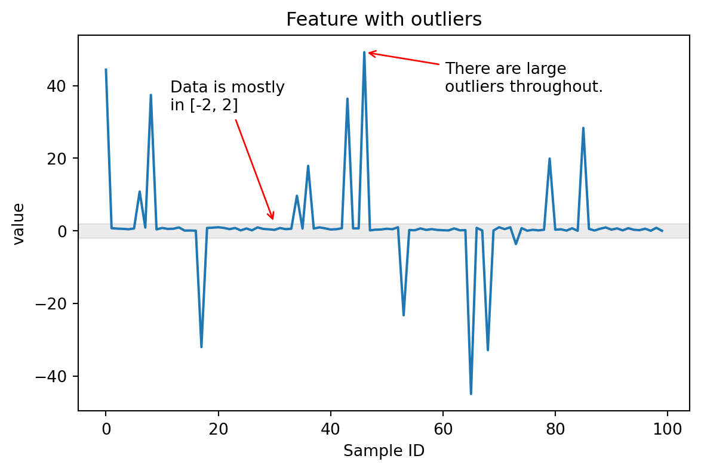
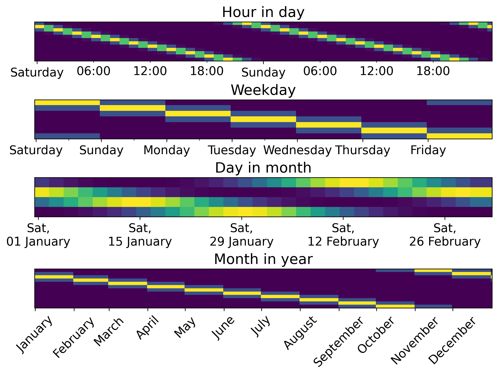

from helpers import (
generate_data_with_outliers,
plot_feature_with_outliers
)
values = generate_data_with_outliers()
plot_feature_with_outliers(values)
TableVectorizer and tabular_pipelineBoth the TableVectorizer and the tabular_pipeline rely on various skrub encoders to feature-engineer the given table: - categorical features need to be converted into numbers - datetime features need to be split in datetime parts - numeric feature need to be scaled
In this chapter we will cover the relevant skrub transformers in more detail
Consider a situation where a numerical feature includes large outliers.
Most values are in range [-2, 2], but some outliers are in [-40, 40]:

StandardScaler ProblemsRobustScalerSquashingScaler: Best ApproachSmart outlier handling in skrub:
SquashingScaler WorksAdvantages: - Outlier-resistant: Inliers unaffected by outliers - Bounded output: Predictable range ideal for neural networks - Handles edge cases: Works with infinite values, constant columns - Preserves NaN: Missing values stay unchanged
Disadvantages: - Non-invertible: Cannot perfectly reverse transformation
Machine learning models need numeric input, but we have:
How to convert these features to numbers?
Creates binary indicator columns:
Pros: Intuitive, works well for few categories Cons: Explodes with many categories, creates sparse matrices
Assigns sequential numbers:
Pros: Memory efficient Cons: Introduces artificial ordering, lacking context
What if you have 1000+ unique values (IDs, free text)?
Skrub implements four different strategies: - StringEncoder - TextEncoder - MinHashEncoder - GapEncoder
TableVectorizer and tabular_pipelinePros: Captures semantic meaning, works very well on text Cons: Very slow, requires heavy dependencies
| Encoder | Speed | Performance | Interpretability | Use Case |
|---|---|---|---|---|
| OneHot | Fast | Good | High | Low cardinality |
| StringEncoder | Fast | Excellent | Low | Default choice |
| TextEncoder | Slow | Excellent | Medium | Real text data |
| MinHashEncoder | Very Fast | Fair | Low | Quick prototyping |
| GapEncoder | Slow | Good | High | Interpretability needed |
OneHotEncoder for < 40 unique valuesStringEncoder for high-cardinalityTextEncoder for true natural languageDatetimes come in many formats:
Correct parsing is essential for feature extraction.
ToDatetime: Single column transformer with format guessing:
| dates | |
|---|---|
| 0 | 2023-01-03 |
| 1 | 2023-02-15 |
Cleaner: Also parses datetimes with custom format:
Datetimes must be converted to numerical features:
df_dt["year"] = df_dt["dates"].dt.year
df_dt["month"] = df_dt["dates"].dt.month
df_dt["day"] = df_dt["dates"].dt.day
df_dt["weekday"] = df_dt["dates"].dt.weekday
df_dt["day_of_year"] = df_dt["dates"].dt.day_of_year
df_dt["total_seconds"] = (df_dt["dates"] - pd.Timestamp("1970-01-01")) // pd.Timedelta('1s')
df_dt| dates | year | month | day | weekday | day_of_year | total_seconds | |
|---|---|---|---|---|---|---|---|
| 0 | 2023-01-03 | 2023 | 1 | 3 | 1 | 3 | 1672704000 |
| 1 | 2023-02-15 | 2023 | 2 | 15 | 2 | 46 | 1676419200 |
| dates_year | dates_month | dates_day | dates_total_seconds | dates_weekday | dates_day_of_year | |
|---|---|---|---|---|---|---|
| 0 | 2023.0 | 1.0 | 3.0 | 1.672704e+09 | 2.0 | 3.0 |
| 1 | 2023.0 | 2.0 | 15.0 | 1.676419e+09 | 3.0 | 46.0 |
Cyclical patterns need special handling:
Or with DatetimeEncoder:
| dates_year | dates_total_seconds | dates_month_circular_0 | dates_month_circular_1 | dates_day_circular_0 | dates_day_circular_1 | |
|---|---|---|---|---|---|---|
| 0 | 2023.0 | 1.672704e+09 | 0.500000 | 0.866025 | 5.877853e-01 | 0.809017 |
| 1 | 2023.0 | 1.676419e+09 | 0.866025 | 0.500000 | 1.224647e-16 | -1.000000 |
| dates_year | dates_total_seconds | dates_month_spline_00 | dates_month_spline_01 | dates_month_spline_02 | dates_month_spline_03 | dates_month_spline_04 | dates_month_spline_05 | dates_month_spline_06 | dates_month_spline_07 | dates_month_spline_08 | dates_month_spline_09 | dates_month_spline_10 | dates_month_spline_11 | dates_day_spline_0 | dates_day_spline_1 | dates_day_spline_2 | dates_day_spline_3 | |
|---|---|---|---|---|---|---|---|---|---|---|---|---|---|---|---|---|---|---|
| 0 | 2023.0 | 1.672704e+09 | 0.0 | 0.166667 | 0.666667 | 0.166667 | 0.000000 | 0.0 | 0.0 | 0.0 | 0.0 | 0.0 | 0.0 | 0.0 | 0.036000 | 0.538667 | 0.414667 | 0.010667 |
| 1 | 2023.0 | 1.676419e+09 | 0.0 | 0.000000 | 0.166667 | 0.666667 | 0.166667 | 0.0 | 0.0 | 0.0 | 0.0 | 0.0 | 0.0 | 0.0 | 0.166667 | 0.000000 | 0.166667 | 0.666667 |

ToDatetime or Cleaner to parse string datesDatetimeEncoder extracts useful features